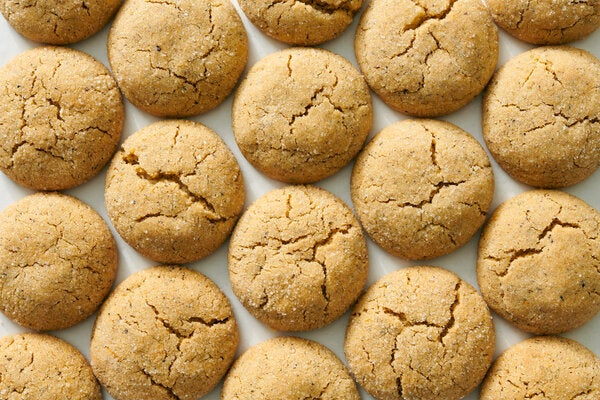

Chewy Earl Grey Sugar Cookies

Description:
Feeling fancy? These sophisticated sugar cookies from The New York Times's Yossy Arefi are just as good for entertaining as they
are for your afternoon snacktime.
Yield: About 20 cookies
Ingredients
- 1 1/4 cups/250 grams granulated sugar
- 14 tablespoons/198 grams unsalted butter
- 1 tablespoon finely ground Earl Grey tea leaves, from about 3 tea bags
- 1/2 cup/100 grams light brown sugar
- 3/4 teaspoon kosher salt (Diamond Crystal)
- 1/2 teaspoon finely grated orange zest
- 1 large egg
- 2 teaspoons vanilla extract
- 2 1/2 cups/320 grams all-purpose flour
- 1/2 teaspoon baking powder
- 1/2 teaspoon baking soda
Steps
- Heat oven to 350 degrees and line two half-sheet pans with parchment paper.
Put 1/2 cup/100 grams granulated sugar in a small dish and set aside.
- Combine the butter and tea leaves in a small saucepan over medium heat.
Melt the butter, stirring occasionally, until it just begins to sizzle around the edges.
Remove from the heat and let cool for 5 minutes.
- Add the tea butter to a large bowl, then add brown sugar, salt, orange zest, and remaining
3/4 cup/150 grams granulated sugar. Use an electric mixer on medium speed or a whisk to combine for about 30 seconds;
the mixture will be grainy and separated. Add the egg and vanilla, and mix until combined and smooth, about 30 seconds.
- Add the flour, baking powder, and baking soda to the bowl, and mix on low speed or with a rubber spatula until just combined.
Use the spatula to scrape the sides and bottom of the bowl to ensure the dough is evenly mixed.
- Use a 2 tablespoon cookie scoop to portion the cookies.
Roll each dough ball in the reserved sugar, then place on the baking sheets 2 inches apart.
- Bake the cookies until set, light golden and crackled on top, 16 to 19 minutes, rotating the sheets from top to bottom
and front to back in the oven halfway through. Remove cookies from the oven and let cool on the baking sheets.
Store extra cookies in an airtight container at room temperature for up to 3 days, or for a few weeks in the freezer.